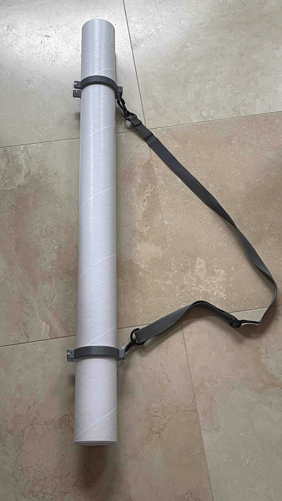

Poster Travel Tube Ring

Model Description
In my junior year of high school, I was fortunate enough to be invited to the American Junior Academy of Science's annual conference, held that year in Boston, Massachusetts. There, I presented my project, SeamStress, at the American Association for the Advancement of Science's conference that was happening in conjunction with the junior conference I attended. However, I needed a way to transport my poster without damaging it, and with just a few days before I had to leave, I didn't have the time to go find a travel tube.
Instead, I bought a mailing tube and 3d printed some rings to wrap around it.
The ring can fit around the poster tube on its own, but I added zip ties for extra security. Additionally, I took a strap from an old lunchbox to serve as the carrying strap of the tube.
3D Printer Settings
Turns any 3" diameter mailing poster tube into a travel poster tube!
Might need to be slightly bent open so it can fit around the tube. Adjust the position on your tube at your own discretion.
Single print. Intended to fit on a 220x220x220mm base plate.
Here were my 3D printer settings:
3D printer: Creality Ender 3 Pro
Slicer: Ultimaker Cura
Filament type: PLA
Layer Height: .2mm
Wall/Top/Bottom Thickness: .8mm
Infill: 20%
Printing Temp: 200 degrees C
Base Plate Temp: 60 degrees C